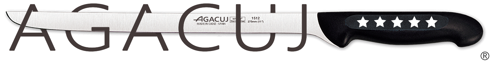

Utilizamos cookies propias y de terceros para proporcionar y mejorar nuestros servicios. Si continua navegando, consideramos que acepta su uso. Puede cambiar la configuración u obtener más información
aquí
.
Aceptar
